- About
- Diary
- People
- Events
- Reading
- Writing
- Meals
- Meetings
- Search

Jan. 1. Su.Write 12 lines. Dine at Holcroft's with Fenwick, talk of government, the law, &c .
2. M.Notes on Part III. Call on Barry, talk of counter revolution. Mrs Cooper dines. Sup at Fenwick's with Holcroft, talk of the law & intellectual improvement.
3. Tu. Talk with Marshal on sullenness: with J C on honesty & talents. Read Rights of Man 18, & Burke's Reflections, Costive 28 pages. Costivee
4. W.Read Anna, Vol. 6. Costivee.
5. Th.Call on Webb, nah. Seek col. Barry & Canning. Read Burke, 28. Sup with miss Godwin, talk of religion.
6. F.B. Hollis calls. Read the Widow: Holcroft sups.
7. Sa.Dyson calls. Notes. Read Anacharsis, 53 pages.
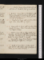Jan. 8. Su.Write 2 1/2 pages. Dine at Holcroft's. sup with him at Fenwick's, talk of irresolution.
9. M.Write 3 pages. Dine at B. Hollis's, with Disney, Jennings & Serbonnier, talk of honesty. Anacharsis, 13 pages. Webb calls, talk cursorily of constitutions.
10. Tu.Transcribe 4 pages with corrections. Mrs & miss Cooper dine, talk of religion.
11. W.Transcribe 2 1/2 pages with corrections. Read Burke, 100 pages: Parr's Dedication to Hurd. Frost begins, 4 days.
12. Th.Write 1 page. Dyson dines, talk of extirpating the passions, of Homer & of abstract & practical virtue. Holcroft at tea. Meet Jacob. Read Burke, 50 pages: Epistle to Hogarth
13. F.Transcribe 2 pages. Read Burke, 72 pages: Churchil; Night, Conferences, Farewel.
14. Sa.Write 2 pages. Dine at Marshal's, with Mrs & miss Cooper, talk of religion à l'une, of education à l'autre.
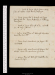Jan. 15. Su.Write 4 pages. Miss Godwin dines; John at supper. Read Burke, 30 pages.
16. M.Read Anna, Vol. 7/2: Burke 16 pages. Holcroft at tea. Read Protesilas en Télémaq[ ] Rum fevere.
17. Tu.Write 4 pages. Holcroft at tea, sup with him at miss Godwin's.
18. W.Call on Webb. nah. Dine at Holcroft's. Huniades{.} Read the Rosciad.
19. Th.Fevere. Read Anacharsis, 70 pages: the Candidate.
20. F.Dyson calls. Anacharsis, 16 pages. Nat at tea. Read the conclusion of Anna.
21. Sa.Anna. Dine at Holcroft's. Isabella. Anacharsis, 12 pages.
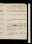Jan. 22. Su.Anacharsis, 16 pages. Peroration of Anna. Three brothers dine; talk of hereditary nobility, property & French revolution.
23. M.Conclude Burke, 40 pages. Holcroft at tea. Sup at miss Godwin's, with Mrs Cooper.
24. Tu.Write 1 page. Giddinesse. Read the Biter
25. W.Dine at Mr Henley's, near the Angel, Edmonton.
26. Th.Peroration of Anna. Last classical lesson of T. C.eRead // the Author, Independence, Apology & Jane Shore. Begin Oedipus Tyrannus.
27. F.Peroration of Anna. Read Gotham, B. I. Begin Tasso, Canto 6.
28. Sa.Webb calls, talk of immortality. See Venice Preservede.
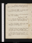Jan. 29. //Su.Call on dr Lister & B. Hollis, n. a. h.; on Jacob, fr. Dine at Holcroft's, adv. Dyson.
30. M.Call on dr Lister; on Canning, nah. on Jacob, do. Read Gotham, B. II.
31. Tu.Write 2 1/2 pages. See the Fair Penitente. New under waistcoat. Parliament meetse
Feb. 1. W.Holcroft calls. Call on Barry: sup at miss Godwin's. Miss Holcrofts at tea.
2. Th.Severe cold & fevere. Call on Gray, with Holcroft. See the Magiciane.
3. F.Read Mirabeau, 60 pages; Correct Tom's translation of Genlis. Holcroft at tea; call with him on Davis, & Fenwick nah.
4. Sa.Read Mirabeau, 42 pages. Dine at Shield's, with Crosdil, Holcroft, Perry, Gray & Hey.
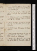Feb. 5. Su.Mirabeau, 20 pages. Dyson calls, talk of miss Godwin. Dine at Nicholson's, with Holcroft.
6. M.Mirabeau, 54 pages. Holcroft at tea: sup at Holcroft's, talk of passivity. Indisposede.
7. Tu.Mirabeau, 90 pages. Dr Lister calls. Prophecy of Famine. Tasso, 12 stanzas. Anna St Ives publishede.
8. W.Write 1 3/4 pages. Holcroft at tea. Sup at miss Godwin's, talk of Christianity. Tasso, 13.
9. Th.Write 3 pages. Mirabeau, 24 pages{.} Tasso, 15.
10. F.Write 3 pages. Mirabeau, 30 pages. Tasso, 19. Holcroft at tea, talk of Robinson. Read Protesilas en Télémaque.
11. Sa.Write 1 page. Mirabeau, 30 pages. Dyson at tea, talk of translation. Tasso, 6.
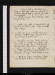Feb. 12. Su.Tasso, 5. Call on Mrs Webb, nah. Dine at Holcroft's, with major Jardine & walking Stuart, talk of self love, free will & immortality.
13. M.Write 3 pages. Meet Sheridan. Hol//croft at tea.
14. Tu.Webb calls, talk of immortality, self love & nah Write 1 page. Tasso, 10: Mirabeau, 38 pages.
15. W.Write 4 1/2 pages. Tasso, C.VII{,} 17. Mirabeau, 18 pages: Vol. II, 15 pages. Holcroft at tea. Sup at miss Godwin's. ()
16. Th.Mirabeau, 25 pages. Dibbin & Dyson dine; talk of necessity, immortality, self love & eccles. history. Paine, Pt II, 88 pages. Holcroft at tea, talks to Dyson of painting.
17. F.Paine, 100 pages: Porson, 180 pages (: Tasso, 9. Mrs Cooper dines. Webb calls, nah. Mirabeau, 33 pages. Frost & snow, 7 days.
18. Sa.Write 2 1/2 pages. Mirabeau, 53 pages. See the Road to Ruine: sup at Holcroft's.
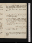Feb. 19. Su.Dyson calls, talk of Anna St Ives. Dine Holcroft's, with Crosdil, Shield, Nicholson, Perry, Gray, Gordon, Bicknel & Fenwick.
20. M.Caffé, Road to Ruine: Read the West Indian.
21. Tu.Call on Jacob, talk of Paine, Pt II. Read Mirabeau, 46 pages. Sup at miss Godwin's, talk of necessity.
22. W.Call on Robinson, N.A.R.: on Webb, nah: on Canning, talk of pol. philosophy & Holcroft : on Barry, talk of Paine, read on truth. Sup at Holcroft's.
23. Th.Write 2 1/2 pages. Mirabeau, 14 pages. See Douglase. Death of sir J. Reynolds.
24. F.Write 3 pages. Tasso, 12. Rights of Man, 28 pages. Holcroft sups.
25. Sa.Write 2 pages. Read Independence: Rights of Man, 6 pages: Mirabeau, 22 pages.
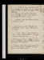Feb. 26. Su.Write 1/2 page. Robinson calls, N. A. R. Robins T Dine at Holcrofts: Stuart & Jardine, talk of truth & self love. Webb calls, nah.
27. M.Arrange pamphlets. Mrs Cooper calls. Miss Godwin dines. Road to Ruin see Fawcete. Mirabeau, 14 pages.
28. Tu.Ab. Dyson calls. Mirabeau, 10 pages. Coriolanus, 3 acts.
29. W.Major Jardine calls. Holcroft calls. Coriolanus, 2 acts: Tasso, 7: Mirabeau, 64 pages.
Mar. 1. Th.Write 2 pages. Tasso, 3: Rights of Man, 6 pages: Barlow's advice, 47 pages. Abr. Dyson & White call. Leopold II dies .
2. F.Write 1/2 page. Tasso 4: Barlow, 59 pages. Dine at B Hollis's, with Baker, Felton{,} Stevens, Edwards, Kent, Taylor & W. Vaughan.
3. Sa.Robinson calls, talks of finances. Read Churchil's Apology: Mirabeau, 18 pages. Dyson at tea, talk of truth.
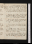Mar. 4. Su.Read the Conference. Major Jardine calls. Dine at Holcroft's. Tea with Jardine, with Holcroft, Barlow, Mackintosh & Stuart. Write to my mother. Mirabeau, 16 ps. self love, laws, property, revols.
5. M.Write 3 1/2 pages. Holcroft at tea. Sup at miss Godwin's, talk of necessity & Helvets.
6. Tu.Write 2 1/2 pages. Call on Jacob, nah; M[r?] Webb; & Holcroft, nah. Jardine calls; notes on do. Finish Oedipus, begin Philoctetes
7. W.Write 5 pages. Hume on National Characters: Burke on Ireland, 57 pages: Hume on self love. Sup at Holcroft's.
8. Th.Write 2 1/2 pages. Finish Burke 29 pages: read the Baviad: Anna St Ives, V. 1.Call on Bulmer.
9. F.Call on Barlow; Jacob, nah; & Barry. Read the Duellist: Richard II, 2 acts. Story of Mrs Wolstencraft. Frost, 4 days.
10. Sa.Call on Bulmer & B. Hollis: dine w. the latter, talk of money & religion. Stuart calls. Sup at Holcroft's. Richard II, 2 acts. Earl of Bute dies
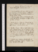Mar. 11. Su.Jardine, Holcroft & dr Lister call. Read Wakefield: Richard II, 1 act.
12. M.Barlow & Holcroft dine, talk of property, marriage & immortality. invited, Nicholson, Fawcet, Barry, Jacob, dr Lister, Webb & Paine. Finish A. St. I., Vol. 2.
13. Tu.Write 2 pages. Dine at Holcroft's, with Crosdil & Shield. Mirabeau, 16 pages: Rights of Kings, 12 pages.
14. W.Write 2 pages. Tasso, 12: Discontents, 40 pages: Finish A. St I., Vol. 3: Finish Road // to Ruin. Mackintosh's card.
15. Th.Write 2 pages. Call on Webb, talk of Ireland. Dyson dines Tea at Barlow's, with Holcroft, Stuart & Wolstencraft, talk of libels, & the power of mind. Mrs Cooper sups. Hume on Nat. Characters.
16. F.Write 1 page. Bentham, introd. & 19 pages. Tea at Holcroft's, with Jardine. talk w. Ht of marriage.
17. Sa. Write 1 page. Jardine & Holcroft call.Bentham, 18 pages: Tasso, 6: Finish A. St I., Vol. 4. Epistle to Lonsdale.
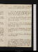Mar. 18. Su.Write 2 1/2 pages. Dine at Holcrofts: advenae Dyson (talk of truth) & Jardine.
19. M.Call on Mackintosh, Webb & Jacob: nah. Meet Stuart. Holcroft at tea, talk of paradoxes. Sup at miss Godwin's. ()
20. Tu.Read the Farewel: Henry IV, 1 act. Finish A. St I., Vol. 5. Quarrel of Cooper & Dysone: Abr. at tea.
21. W.Write to Dyson. Dine at Holcroft's, with Wolcot, Taylor, Shield, Condel & Hatchet. Meet Sheridan, fr. Tasso, 3.
22. Th.Finish A. St I. Walk before Breakfst. White & Abr. Dyson call. Conspiracy of Kings.
23. F.Call on miss Godwin, with Holcroft. Finish Henry IV.
24. Sa.Trial: present H. & D.: convicted of obscenity, gossipping & sinister argumentatione: I address Dyson on violence & misanthropy. Read Poetry Professors, Dedication, Journey, & Observer, 4 papers. Mrs Cooper dines. Write to B. Hollis.
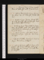Mar. 25. Su.Mercier's Road to Ruin, 2 acts. Dine at Holcroft's, with Dy[ck?] & Scribe.
26. M.Call on Dorset & Bulmers. Mrs Cooper dines. Tea at Holcroft's. J Hollis calls, nah.
27. Tu.Write 1 page. J'ai vu. Tea at Hollis, with Holcroft: sup at Holcroft's. Priestley on Birm. Riot: Dict. Phil.
28. W.Write 1 1/2 pages. Discontents, 25 pages: Dine at J Hollis's, with dr Lister, talk of Xty, property & God: callousness of the mo former as to money.
29. Th.Major Jardine calls. Wind. Discontents, fin, 53 pages: Tasso, 12: Mirabeau, 40 pages.
30. F.Dyson & Dibbin breakfast. Write 1 1/2 pages. Mirabeau, 22 pages.
31. Sa.Call on Bulmers, with J. C. Dine at B. Hollis's, with Barlow & Disney, talk of my book & nah: adv. Jennings: tea with them at Mrs Jebb's.
Apr. 1. Su.Walk with Holcroft & Jardine to J's family . Dine at Holcroft's: Jardine, Barlow, Stuart & Dyson, talk of automatic motions & sleep.
2. M.Jardine calls. Read Rogers's Sermons. Slave trade: leave the chair 234 to 87—gradually 193 to 125—230 to 85e
3. Tu.Write 2 1/2 pages. Sceptic, 3 cantos. Holcroft's lesson to C.eCall on Dorset. Talk with Holcroft of literary monopoly.
4. W.Write 1 page. Finish Sceptic. Tea at Nicholson's with Holcroft, talk of language, alphabet & necessity. Lottery debatee.
5. Th.Write 1/2 pages. Begin Antigone. Finish Mirabeau, Vol. 2. Read Henry IV, P. II, 1 act: Collins's Remarks. Sup at miss Godwin's. ()Begin the Andrian.
6. F.Read Clarke's 1st Defence: Henry IV, 1 act: Mirabeau, Vol. III, 12 pages. Dyson at tea: menstre.
7. Sa. Talk with C.; send for Dyson. Miss Cooper at breakfast & tea. Holcroft & Hollis call. Dyson au soir. Talk to Hollis of money.
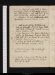Apr. 8. Su.Holcroft calls, talk of literary monopoly: Dine at Ht's, ex his explanation with Mercier: sup with him at Fenwick's, explanation. Andrian, 1/2 an act.
9. M.Andrian, 1 1/2 acts. Webb calls: talk of property Conscious Lovers, 2 acts.
10. Tu.Call on dr Lister: & Webb, nah. Sup at Holcroft's. Write 1 1/2 pages. Webb calls, talk of property. Finish Conscious Lovers: Andrian, act 3.
11. W.See Marriage á la Modee, Shakespre Gallerye & Panoramae. Dine at Holcroft's: trs call with him on Barlow & sup at miss Godwin's. Ranger, act. 1.
12. Th.Call on dr Lister; & Webb, nah. trs sup at Holcrofts. Andrian, act 4.
13. F.Write 3 1/2 pages. Sup at Holcroft's. Ranger, act 2.
14. Sa.Write 1 page. Carry the ms to Nicholson. Dyson sups. Edwards, 6 pages. Holcroft for Bath.
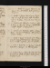Apr. 15. Su.Write 3 1/2 pages. Edwards, 24 pages. Tea at Hollis's, talk of money & advice.
16. M.Write 3 pages. Edwards, 32 pages. Sup at miss Godwin's, with Borcham. Call on Bulmer; & Jacob, nah. Ranger, act 3.
17. Tu.Indisposede. Edwards, 23 pages: App. to Price on Morals: Ranger, acts & 4 & 5: Twelfth Night: Antony, act 1.
18. W.Indisposede. Andrian, act 5: Collins's Reply: Clarke's 2nd Defence: Use of Reason: Finish Antony.
19. Th.Write 3 pages. Eunuch, act. 1: Henry V, act 1. Sup at Nicholson's, talk of animals, innate, infinite, space & causation.
20. F.Collins's Reflections, 24 pages: Burke's Reflections, 24 pages. See the Fugitivee.
21. Sa.Write 6 pages. Henry V, acts 2 & 3. Meet Mackintosh at the Stratford, talk of war, necessity & God.
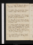Apr. 22. Su.Dine at Fenwick, talk of expenditure. Call on Nicholson, nah.
23. M.Gloom. Henry V, acts 4 & 5: Mackintosh, 50 pages. Call on Webb, nah.
24. Tu.Rain. Montesquieu, B. V: Eunuch, acts 2 & 3: Tempest. Dyson au soir, talk of truth, necessity & revolutions.
25. W.Hear the resumed debate on the abolition of the slave tradee. Read Friendship in Fashion, 3 acts.
26. Th.Call on B. Hollis, Mackintosh, Mrs Webb, nah: & Nicholson. see dr Geddes at the Str. Write 5 pages. Dorothy Ht au soir. Secret Hist. of Cha. II, 30 pages. Miss Godwin dines.
27. F.Dine at Mr Henley's, with his son & Mr Rahl. Fenwick calls, nah. Call on Robinson. Secret Hist., 30 pages.
28. Sa.Secret History, 120 pages: Finish Friendship in Fashion. See the Jealous Wifee. Fenwick sups.
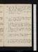Apr. 29. Su.Call on Fenwick, with Dyson, talk to the latter of Greek. Dine with Dorothy. Sup at Nicholson, revisal de mon ouvrage. B. Hollis calls, nah.
30. M.Burnet's Own Times, 200 pages. Secret History, 52 pages.
May 1. Tu.Secret Hist., 12 pages: Paine, 22 pages: Ludlow, 10 pages. Sup at miss Godwin's, talk politics.
2 W.Ludlow, 58 pages: Hume, 40 pages. Webb calls, talk of history: call on Hollis, nah: & Walker, goldsmith. Meet Tooke & Paine.
3. Th.Hume, 122 pages. J Hollis calls. Dine at B. Hollis's, tea with him at Mrs Jebbs. Mrs Cooper sups.
4. F.Revise, 8 pages. Hume 114 pages: Fugitive, 2 acts. Sup at Holcroft's.
5. Sa.Revise, 8 pages. Finish the Fugitive. Dyson au soir. Call on Dorset, nah, Bulmer & Walker. Venice Preserved, 3 acts.
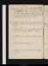May 6. Su.Call on Dorset, & Spilsbury & Dyson. Revise, 73 pages. Sup at Nicholson's, talk of literary societies, taxation, promises & coercion. Read Geddes on slavery. Disney calls{.} Paine, 32 p.
7. M.Revise. Barlow, 58: Finish Venice Preserved. Holcroft at tea.
8. Tu.Revise. Call on Dorset: Meet Fenwick. Gulliver, 7 pages. Revise the Father of a Family.
9. W.Revise. Hume, 91 pages. Holcroft at tea, Abr. Dyson, self love. Gulliver, 15 pages.
10. Th.Write 5 pages. Burke on Natural Society.
12. Sa.Revise. Call on John Robinson. Paley, 53 pages.
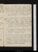May 13. Su.Revise: write 1 1/2 pages on suicide. Dine at Holcroft's, with Dyson, talk of gravitation. Sup at Nicholson's, w. H. talk of immortality, abstraction, causation, majorities & promises. Paley, 28 pages.
14. M.Arrange. Paley, 21 pages: Hume, 38 pages: Discours sur l'Homme, 2 parties. Dine at B. Hollis's: call on Nicholson.
15. Tu.Write 2 1/2 pages, on Equality. Discours, 2 parties: Paley, 37 pages: Hume, 20 ps. Call on miss Cooper: sup at Nicholson's with Holcroft, talk of necessity & divisn of lab Dorset calls]relign.]
16. W.Call on Robinson, Spilsbury, Webb nah, & J Hollis nah. Wakefield's Memoirs, 170 pages. //Send copy. Sup at miss Godwin's.
17. Th.Exhibitione: Hanover Square, Yaniewicz & Haydne. Mrs Cooper dines: sup at Holcrofts. Wakefield, 30 pages.
18. F.Write 1/2 a page. Discours, 2 parties (5th missing.)Loi Naturelle, 2 parties: Hume, 20 pages: Parr's Sequel, 168 pages. J. C. goes to Spilsburye. Paine's Letter to the Const. Society
19. Sa.Parr, 56 pages. Write 6 pages, on Revolutions. Loi Naturelle, 1 partie: Davis calls. News of J. S. Jordan confirmed.
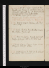May 20. Su.Write 5 pages. Finish Loi Naturelle: read Poeme sur Lisbonne. Dine at Holcroft's: sup with him at Nicholson's, talk of necessity, & Barrow's Mathl Lectures.
21. M.Write 6 pages. J Hollis calls. Proclamation against seditious writingse: Libel Bill, second reading in the lords 57 to 32e.
22. Tu.Write 4 pages. Orphan, acts 1 & 2. First proofs.
23. W.Revise. Steel on Punctuation. Finish the Orphan. Dyson calls
24. Th.Write 7 1/2 pages, on Private Judgment. Paley, 49 pages. Call on Mrs Webb, nah.
25. F.Write 8 pages. Paley, 51 pages: Hume, 28 pages. Holcroft at tea.
26. Sa.Write 6 pages. B. Hollis at tea. Holcroft at supper. Fair Penitent, act 1.
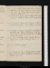May 27. Su.Write about duty, 1 page. Dyson & White call, talk of force. Call on Nicholson, talk of virtue, duty & associations. Fair Penitent, act 2.
28. M.Write 3 pages, revise. Finish the Fair Penitent. Holcroft dines with Merry & Pain{e}
29. Tu. Write or transcribe 6 pages, on the social contract. Jane Shore: Hume, 22 pages.
30. W.Write 2 1/2 pages. Douglas, 1 act. Dine at Holcroft's: sup at Nicholson's, talk of government, contract, associations & instinct. Call at Fenwick's.
31. Th.Revise Book II, Part I: Write 4 pages. Miss Cooper calls: Holcroft sups.
2. Sa.Write 4 1/2 pages. Dine at B. Hollis's, with Disney, Dodson, Towers, Rutt & Beauséjour. Holcroft au soir.
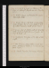June 3. Su.Write 4 pages, on Obedience, &c. Dine at Holcroft's: Pinard au soir. Douglas, act 2.
4. M.Write 2 pages, on Promises, &c: revise. Mrs Cooper dines.
5. Tu.Revise. Dyson calls, talk of force & the virtue of fools. Sup at miss Godwin's, talk of justice & speaking truth. J Cooper bounde.
6. W.Revise. Sup at J Hollis, with dr Lister, talk of the social contract, obedience & justice. Holcroft & Shield call.
7. Th.Indisposede. Douglas, act 3. Sup at Holcroft's.
8. F.dittoe. Douglas, act 4: Lettres sur les Animaux, 168 pages: History of a Creole, 116 pages. Write 1 page.
9. Sa.Finish Douglas, Animaux & Creole.
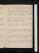June 10. Su.Write 1 page. Read De L'Homme, 79 pages. Dine at Holcroft's, talk of Burke & Paine, & of property: adv. Dyson. Read Parr's Irenopolis, & Paine's Letter to Dundas
11. M.Write 4 pages. Dine at B. Hollis's, with Priestley & Lindsey: the former a republican, lend himAnna St Ivese. J Hollis calls.
12. Th.Write 3 pages: revise. Sup at Nicholson's{,} talk of obedience, delegation, secrecy & abstraction. Read the Political Dialogue.
13. W.Write 3 pages, on obedience: revise. Wolstencraft, 169 pages. Continual Rain.
14. Th.Write 2 pages, on associations. Call on dr Lister, J Hollis & Holcroft, nah. Wolstencraft, 148 pages.
15. F.Revise. Dine at Free Mason's Tavern, with Erskine, Mackintosh, Thomson, Dunbar, S. Rogers, Stone, &c. Read Wyvil, 42 pages.
16. Sa.Revise un peu. Helvetius, 31 pages: Eloise, Vol. 4., 56 pages; Vol. 5., 74 pages: Finish Wyvil.
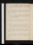June 17. Su.Revise. Eloise, 14 pages. Dine at Holcroft's, talk of sincerity & parties. Hot weather.
18. M.Write 7 pages, on sincerity: revise. Eloise, 18 pages: Helvetius, 19. Holcroft at tea, talks to C. of the classics, &c.
19. Tu.Write 2 1/2 pages, on worldly prosperity. Eloise, 30 pages. Sup at Holcroft's, talk of prosperity. Cold. Dr Lister calls.
20. W.Revise: write 2 pages. Eloise, 32 pages. Talk with C. of Leon & Benedick.
21. Th.Dyson calls, talk of necessity, abstractions & beauty. Read Price, 21 pages: Eloise, 22: Country Girl. Holcroft at tea, reads Benedick.
22. F.Revise. Dine at Holcroft's, with Mr and Mrs Kemble: T.C. at tea. Read the Agreeable Surprise.
23. Sa.Write 4 pages, on Self love: revise. Read Collins on Human Liberty, & Priestley: Eloise, 10 pages.
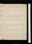June 24. Su.Write pages. Dine at Holcroft's: sup with him at Nicholson's, talk of self love. Eloise, 42 pages.
25. M.Write pages. Eloise, 74 pages.
26. Tu.Write 6 pages, on animal motion. Sup at Holcroft's with Dyson, talk of animal motion & chastisement.
27. W.Write 3 pages. Holcroft reads.
28. Th.Rewrite 5 1/2 pages, of animal motion. Read Hume on causation, &c., 22 pages.
29. F.Rewrite & write 6 1/2 pages. Read Watson on Time, 80 pages: Eloise, 132 pages.
30. Sa.Write 2 1/2 pages. Watson on Time, 20 pages: Finish Eloise after 2 years reading, 54 pages: Begin do, 19 pages: Burke on Oeconomy, 14 pages. Holcroft au soir.
No. V. Mrs Inchbald, Oct. 29, 1792
Su. July 1.Read Burke on Oeconomy, 30 pages: Eloise, 17 pages. Dine at Holcroft's: call with him on Stuart: sup at Nicholson's, talk of ideal unity.
2. M.Write 4 pages, on ideal unity. Holcroft at tea: sup chez lui. Eloise, 22 pags
3. Tu.Write 1 page: revise. Eloise, 17 pages. Tea at Holcroft's, with Barlow, Stuart & Nicholson.
4. W.Write 1 page on self love: Eloise, 59 pages. Miss Cooper dines: Holcroft at tea
5. Th.Visit Dr Priestley, talk of the importance of politics, & moral causation. Barrow's Ma. Lectures, 22 pages on space: Eloise, 38 pages. Call on Dr Lister, nah.
6. F.Write or transcribe 3 pages, on self love. Eloise, 72 pages. Dine at Holcroft's, With Yaniewicz, Clementi, Crosdil, Shield, Damen, maj. Waller, Otley & Bicknel: Quartetse.
7. Sa.Notes. Finish Burke on Oeconomy: Eloise; 46 pages: Horne Tooke's triale. Call on Fenwick, with Holcroft. See Nicholson.
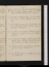July 8. Su.Burke's Speech at Bristol, 12 pages: Eloise, 64 pages; Preface to do. Dine at Holcroft's; Mr Pitt, talk of poetry & religion.
9. M.Call on Robinson, nah. Speech at Bristol, 13 pages: Junius, 270 pages: Eloise, 105 pages.
10. Tu.Write 1 page: revise. Mackintosh calls, talk of Hartley & self love. Junius, 18 pages. News from Edinburghe.
11. W.Revise on necessity. C's theatrical lessonse. Junius, 46 pages: Burke on the Sublime, 26 pages.
12. Th.Revise on necessity: write 1 page. Theatrical lessonse: sicknesse. Junius, 30 pages. Sup at Nicholson's, talk of causation.
13. F.Hume on the understanding, 42 pages: Junius, 16 pages. Theatricalse.
14. Sa.Write 1 page on necessity. Hume, 14 pages. Theatricalse.
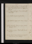July 15. Su.Write 1 page. Dr Lister calls, talk ideas & Dr Priestley. Hume's Dialogues, 35 pages. Mrs & miss Cooper dine: abortive rehearsale.
16. Th.Hume, 26 pages: Dine at Holcroft's: Theatricalse .
17. Tu.Write 2 pages, on associations.
18. W.Write 1 1/2 pages, on do. Hume, 23 pages.
19. Th.Indigestione. Hume, 13 pages: Junius, 74 pages. Revise.
20. F.Eloise, 9 pages. Stuart calls. Dine at Holcroft's.
21. Sa.Finish Hume's Dialogues, 17 pages: Eloise, 64 pages: Junius, 8 pages.
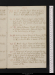July 22. Su.Write 2 pages. Eloise 16 pages. Dine at Holcroft's. C. for Edinburghe. Hume's Hist. of Religion, 10 pages.
23. M.Revise. Eloise, 4 pages: Love's Labour Lost, 4 acts: Spence's Magliabechi. Call on Webb, nit, & miss Godwin. Dyson calls. Miss Godwin sups.
24. Tu.Tasso, 8 stanzas. Finish Hist. of Religion, & Love's Labour Lost: Eloise, 46 pages: Hume on the understanding, 16 pages.
25. W.Write 3 1/2 pages. Hume, 35 pages: Systêm{e}, 12 pages: Measure for Measure, acts 1 & 2. See the Enchanted Woode. C. arrives at Edinbhe.
26. Th.Write 3 pages. Transcribe & correct 2 1/2. Systême, 22 pages: Eloise, 39 pages. Finish Measure for Measure: Midsummer Night, 2 1/2 acts.
27. F.Transcribe & correct 1 1/2 pages. Dyson calls, talk of prosperity & God, dines. Systême, 14 pages: finish Midsummer Night: Merchant of Venice, 1 1/2 acts. Sup at Nicholson's, talk of France, matter & Hartley. Rehearses Douglase
28. Sa.Write 2 pages, on prosperity. Finish Merchant of Venice: Much Ado, 3 acts. Miss Godwin at tea.
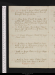July 29. Su.Write 2 pages. Stuart calls, talk of sincerity. Much Ado, act 4: Dine at Holcroft's, talk of Achilles.
30. M.Hear from & write to Cooper: Holcroft// to Mrs Siddonse. Read Rowe's Life of Shakespear, Pope's & Johnson's Prefaces, Malone's Chronology, &c.
31. Tu.Write 2 pages. Chronology: Finish Much Ado: Two Gentlemen of Verona: Henry 4, act. 1.
Aug. 1. W.Finish Henry 4: Stuart, 137 pages. Stuart calls.
2. Th.Systême, 12 pages: Stuart, 75 pages. Write a Life of Shakespeare, 7 pages. Sup at Holcroft's, with Shield.
3. F.Write 2 1/2 pages. Eloise, 50 pages: Henry 4 II, 1 1/2 acts.
4. Sa.Write 1 1/2 pages: revise. Eloise, 7 pages: Finish Henry 4 II: Henry 5, // act. 1. Burgoyne dies.
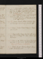Aug. 5. Sa.Revise un peu. Write a letter to C. Dine at Holcrofts, with Crosdil, talk of disease. Tea at Watts's, with Holcroft & Dowse, talk of politics & vice. Fenwick sups. Guilford dies.
6. M.Revise. Cibber's Richard, 3 acts. Holcroft & Fenwick at tea. Henry 5, act 2. C's first appearance, at Newcastle, Smith in the Road to Ruin e.
7. Tu.Revise. Finish Cibber's Richard: Essay on Falstaff. Sup at miss Godwin's.
8. W.Merry Wives: Finish Henry 5: Henry 6 I, 1 1/2 acts.
9. Th.Transcribe 2 pages, Book V, with corrections. Finish Henry 6 I: Lear: Eloise, 43 ps. Protesilas.
10. F.Henry 6 II: Eloise, 37 pages. Stuart calls: tell him of his errors. Tea at Holcroft's. King of France suspendede.
11. Sa.Write 2 pages. Eloise 42 pages: Henry 6 III: Richard, 2/3 act.
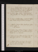Aug. 12. Su.Write or transcribe 3 pages. Richard, 2 1/3 // acts. Dine at Holcroft's: advenae Dyson & Pinard, talk of absolute & almost infinite liberty, & self love.
13. M.Write 1 page: revise. Finish Richard: Henry 8, acts 1 & 2. Hear from Mrs Siddons.
14. Tu.Send a portmanteaue: write to C. & J Barnard. Finish Henry 8: Eloise, 203 pages.
15. W.Write 5 pages. Eloise, 109 pages: Julius Caesar, 3 acts. C. acts Malcolm e.
16. Th.Write 1/2 page. Eloise, 35 pages: Finish Julius Caesar: Vie de Franklin, 28 pages. Write to C. on Malcolm.
17. F.Revise un peu. Eloise, 18 pages. Dine at Holcroft's: writes to C: Fenwick at tea.
18. Sa.Finish Eloise, 94 pages. Tea miss Godwin's: stage to Rumford, Geo. Shelley. Sleep at the Cock & Bell.[Not in London]
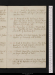Aug. 19. Su.Walk to Ingatestone, B. Hollis's. Vie de Franklin, 43 pages: Corrections of Common Sense.[Not in London]
20. M.Prospects on the Rubicon, 22 pages: Johnson's Life of Milton: Toland's do, 30 pages: Franklin, 27 pages. Mr Preston of Jerico & miss D'Alton dine.[Not in London]
21. Tu.Chronology of Milton: Finish Rubicon: Franklin, 10 pages: Woolston, 40 pages: Castle of Indolence, B. 1.[Not in London]
22. W.Woolston, 250 pages passim. Tea at Dr Stubbs's of Frierning, with B. Hollis.[Not in London]
23. Th. Walk to Rumford, 3 hours: stage to town[:?] breakfast at miss Godwin's: dine at Mr Marshal's. See Cross Partnerse.[Not in London]
24. F.Finish Franklin: Confessions, Part II, 92 pages. Holcroft at tea.
25. Sa.Rousseau on Miracles, 37 pages: Dedication to the Republic, 22 pages: Confessions, 222, pages.
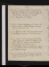Aug. 26. Su.As you Like it, 2 1/2 acts: Confessions, 124 pages. Dine at Holcrofts: tea with him at Nicholson's, talk of optimism. Shield & mrs Clendenning au bas.
28. // Tu.Finish Confessions, 150 pages: Rêveries, 33 pages: Sur la Pologne, 13 pages. Miss Godwin sups.
29. W.Jardine calls. Read his journal: Cooper's Reply, 66 pages: Rêveries, 76 pages.
30. Th.Finish Cooper, 16 pages: Nouvelles Lettres, 84 pages: Lettre à d'Alembert, 88 pages. Ab. Dyson at tea. Sup at Holcroft's, talk of French & Spartan virtue.
31. F.Holcroft calls, in instigandum. Call on Barry, il veut acheter. A d'Alembert, 138 pages: Lettres, 94 pages.
Sep. 1. Sa.Revise. Sur la Pologne, 44 pages: Finish à d'Alembert, 42 pages: Lettres, 113 pages: Le Mondain.
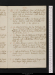Sep. 2. Su.Giddinesse. Dine at Holcroft's: Dyson & Dibbin at tea, Sup talk of promises. Sup at Nicholson's with Holcroft, talk of Helvetianism.
3. M.Giddinesse. Lettres, 76 pages: La Tactique. Jardine calls, lend him Ms. proofse. Fenwick sups, talk of his affairs. .
4. Tu.Borghesi's ms: Sur la Pologne, 28 pages: finish Lettres, 72 pages: Rêveries, 48 69 pages. Write to Jordan & Surtees. Call on dr Lister, nah.
5. W.Revise. Sur la Pologne, 37 pages: Rêveries, fin, 29 pages: Apocalypse, 34 pages{.} Jardine calls, returns ms ms proofse: Stuart calls, talk of self.
6. Th.Write 4 pages: revise. Sur la Pologne, 16 pages: Stuart, 29 pages. Dine at Holcrofts, avec Noel & le cousin de Danton, Merget.
7. F.Call on Robinson & Davis. (state 1 Dec.)eWrite 2 pages: revise. Rabaud's History, 105 pages.
8. Sa.Write 5 pages. Rabaud, 77 pages: Cooper, 7 pages. Miss Godwin sups.
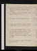Sep. 9. Su.Write 6 pages. Dr Lister calls. Dine at Mr Holcroft's: tea major Jardine's, wth Holcroft, D. Williams, Barlow & major Derham.
10. M.Sickness, sursum & deorsume. Cooper returns. Holcroft at tea.
11. Tu.Revise. Finish Rabaud, 76 pages.
12. W.Rain: firee. Finish Pologne, 42 pages: Contrat Social, 60 pages: Stuart, 27 pages.
13. Th.Indisposede. Contrat Social, 36 pages: Price par Mira., 16 pages: Jardine, 11 pages. Dine at Holcroft's, with Mr & Mrs Knight. See Noel & cousin. Jardine calls, nah.
14. F.Rain. Contrat Social, 81 pages: Jardine, 99 pages.
15. Sa.Contrat Social, 52 pages. Holcroft calls: Jardine at tea.
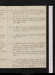Sep. 16. Su.Finish Contrat Social, 39 pages: read the Liar. Dine at Holcroft's, Jardine at tea. Dyson calls, usher. Mably sur l'Amérique, 60 pages.
17. M.Write 3 pages. Mably sur L'Amerique, 126 pages: Major Cartwrights pamphlet. Holcroft at tea.
18. Tu.Write 6 pages. Finish Mably sur l'Am., 27 pages: Burke's Reflections, 43 pages (on chivalry & religion).
19. W.Write 6 pages. Condorcet on Deceit. Holcroft at tea.
20. Th.Write 6 1/2 pages. Mably on Legislation, 26 pages: Paley on War, 26 pages: Jockey Club, 22 pages. Sup at Nicholson's, talk of foundations, & labour.
21. F.Write 4 1/2 pages: Jockey Club, 24 pages. Holcroft at tea, talk of Eutopia: Barlow calls.
22. Sa.Write 6 pages. Jardine calls. Tea at Barlow's with Jardine, Stuart, Wolstencraft, & Holcroft, talk of self love, sympathy & perfectibility individual & general. Sup at Holcroft's. Jockey Club, 62 pages.
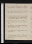Sep. 23. Su.Write 4 pages. Dine at Holcrofts{:} call at Nicholson's. nah{.} Hobhouse; 75 pages.
24. M.Write 3 pages. Hobhouse, 33 pages. Mably, 48 pages. Holcroft at tea: sees Harris .
25. Tu.Write 6 pages. Mably 7 pages: Jockey Club, 14 pages. Sup at Nicholson's, with Holcroft, talk of obedience, war & property.
26. W.Write 4 pages. Jardine calls, talk of Burney & Blair. Rousseau à Malesherbes, 36 pages.
27. Th.Write 7 1/2 pages. Article, Fondation: finish Rousseau, 50 pages.
28. F.Write 2 1/2 pages: notes for Book VI. Holcroft at tea.
29. Sa.Write 2// pages, Book VI. Mably, 119 pages: finish Jockey Club, 66 pages. Interrupted by rain.
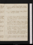Sep. 30. Su.Write 1 1/2 pages. Mably, 36 pages. Jardine calls. Dine at Holcrofts: adv. Stuart & Dyson.
Oct. 1. M.Mably, 61 pages: Odes of Importance. Abr. Dyson at tea.
2. Tu.Write 3 pages: head-ache. Mably, 7 pages: La Politique Naturelle, abrégé, ça & la, 12 pages. Holcroft at tea: call at Nicholson's, nah{:} sup at miss Godwin's.
3. W.Write 3 pages. Mably, 38 pages: De la Manière d'E. l'Hist., 26 pages: Hume's Essays, Pt I, Essays 2, 3, 4: finish Hobhouse, 38 pages. Dyson at tea, talk of property & coercion.
4. Th.Hume, Pt I, Essay 5: do on commerce, &c. 28 pages: Mably, 13 pages: Charlemagne, M., 50 pages. Holcroft & Fenwick at tea: Jardine, do. Weather, east wind.
5. F.Mably, 73 pages. Meet Mackintosh. Sup at Nicholson's, talk of punishment, education, cooperation & cohabitation.
6. Sa.Hume, 14 pages: finish Mably on Legislation, 100 pages: do on History, 54 pages.
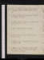Sep Oct. 7. Su.Write 3 1/2 pages. Esprit des Lois, 58 pages: Eloge de Montesquieu, 50 pages.
8. M.Revise. Esprit des Lois, 23 pages: Mably on History, 130 pages.
9. Tu.Revise. Mably on History, 100 pages. Holcroft & Jardine at tea.
10. W.Revise. Montesquieu, 47 pages.
11. Th.Revise. Anecdotes of Chatham, Vol. 1, minus speeches.
12. F.Write 2 pages. Montesquieu, 46 pages{.} Holcroft at tea.
13. Sa.Write 2 pages. Plutarch's Cimon, 32 pages: Finish Mably on History, 32 pages: Sur les Grecs, 96 pages.
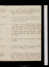Oct. 14. Su.Write 2 pages. Sur les Grecs, 60 pages. Dine at Holcroft's with Crosdil: adv. Merget, Danton jun. & Pinard:
15. M.Sur les Grecs, 98 pages: Plutarch, Themistocles, 26 pages. Search for Cicero's general. Holcroft at tea.
16. Tu.Finish Sur les Grecs, 18 pages: Logan, 121 pages: Paine on the Proclamation, 17 pages. Holcroft calls: Dyson at tea, talk of ancient virtue, & respect for other men's jt.
17. W.Write 1 page. Annual Register, 20 pages. Holcroft at tea. Pa Finish Paine, 57 pages.
18. Th.Write 7 pages. Barlow to the Convention, 47 pages.
19. F.Write 13 pages. Finish Barlow, 23 pages. Wolcot's More Money. Write to Mr Jones.
20. Sa.Write 1 page. Finish Themistocles, 26 pages: Aristides, 41 pages: Rollin, 20 pages. Rain, head ache. See Romney's Paine, Fuseli's Devil, & Trumbul's Gibraltar, at Sharpe'se.
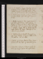Oct. 21. Su.Write 3 pages. Barlow's Advice, 20 pages. Dine at Holcroft's, with major Waller, Merget & Recordat; history of Danton: sup at Nicholson's, talk of constitutions.
22. M.Write 5 pages. Barlow, 26 pages: Rollin, 20 pages. Stuart calls. Holcroft & J Godwin at tea.
23. Tu.Write 3 1/2 pages. Tea major Jardine's, with Holcroft & Dirom, talk of history, the histories of liberty & slavery. Sup at Holcrofts, with Dyson, talk of promises. Call on Mch, nah.
24. W.Write 1 page. Call on Noel, with Holcroft. Rollin, 58 pages. Holcroft at tea. sup at miss Godwin's.
25. Th.Introduction to Smith's Thucydides, 39 pages: Rollin, 28 pages. Letter to the Convention. Call on Otton.
26. F.Rollin, 40 pages. Somers Town. Revise. Jardine at tea, talk of reason & passion.
27. Sa.Barlow, 54 pages: Flowers of the Jacobins, 42 pages. Call on Holcroft & Davis.
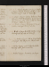Oct. 28. Su.Finish Barlow, 56 pages. Write 9 pages. Finish Flowers, 30 pages: Rollin, 26 pages. Sup at Holcroft's.
29. M.Write 2 pages. Call on Robinson, Davis, Holcroft, & Mrs Inchbald on massacres. Order a sheet a day. Price on the Am. Revoln, 85 pages: Rollin, 20 pages.
30. Tu.Write 2 pages. Beccaria, 78 pages. Rollin, 24 pages. Holcroft at tea.
31. W.Write 6 pages, Book VII. Rollin, 8 pages. Holcroft at tea, sup at Holcroft's.
Nov. 1. Th.Write 2 pages. Call on Noel. Rollin, 52 pages: the Massacre. Stuart calls.
2. F.Write 3 pages: write to Mrs Inchbald. Holcroft calls: Jardine at tea.
3. Sa.Write 6 1/2 pages. Beccaria, 20 pages.
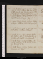Nov. 4. Su.Write 3 1/2 pages. Beccaria, 22 pages. C. at Covent Gardene. De Dine at Holcroft's, dêmelée : adv. Mercier, Dyson & Stuart; talk of languages & precision .
5. M.Write 6 pages. Demêlé , Marshale. Rollin, 25 pages: Pericles, Plutarch, 34 pages: finish Beccaria, 58 pages. fog.
6. Tu.Revise. Finish Pericles, 25 pages: Rollin, 17 pages: Chatham, Vol. II, 108 pages. fog.
7. W.Doctor Raine: sup at Holcroft's: Holcroft at tea. Chatham, 128 pages.
8. Th.Doctor Raine. Call on Mrs Inchbald; adv. Taylor. Sup at Nicholson's; talk of government, property, punishment.
9. F.Doctor Raine: syringee. J Hollis calls. Finish Chatham, Vol. II: Rollin, 12 pages. Holcroft at tea.
10. Sa.Doctor Raine, syringee. Jardine calls. Versorand, 276 pages.
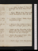Nov. 11. Su.Rollin, 32 pages. Dr Raine. Dine at Holcroft's: adv. Turner, Pinard &Heathcote.
12. M.Raine. Holcroft at tea. C Mercier calls. Finish Versorand, Vol. I. Webb calls, nah.
13. Tu.Ogilvie, 95 pages: Rollin, 36 pages: Thucydides, 91 pages.
14. W.Revise un peu. Ogilvie, 22 pages: Thucydides, 45 pages. Jardine at tea.
15. Th.Revise un peu. Thucydides, 24 pages. Jardine calls. Call on Raine; adv. Agar. Holcroft at tea; sup at Holcroft's.
16. F.Revise. Thucydides, 8 pages. Call on Davis: sup at J Hollis's.
17. Sa.Write 2 pages: revise. Holcroft at tea.
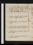Nov. 18. Su.Write 2 pages: revise. Holcroft's ms: Burke, six October, 14 pages. Dine at Holcroft's; adv. Dyson: sup w. H. at Nicholson's, talk of overt acts & oaths
19. M.Revise. Corrections of Holcroft's ms.
20. Tu.Revise. Holcroft's Chap. of Necessity : call on Holcrofts. see Dyson.
21. W.Write 4 pages: revise. Thucydides, 36 pages.
22. Th.Write 5 pages. J Hollis calls, talk of justice: Jardine calls. Sup at Holcrofts.
23. F.Write 6 pages: enrhumé. Thucydides, 36 pages.
24. Sa.Write 3 1/2 pages: revise. Rollin, 17 pages. Jardine au soir.
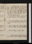Nov. 25. Su.Go with Jardine in Dallas's carriage: call at count Woronzoff's at Richmond: dine at Horne Tooke's, talk of politics & morals: sup at Holcroft's, w. Pinard. hoa-rsen-ess}e
26. M.Call on Raine, Mrs Webb & Mrs Inchbald: dine at Holcroft's, with Destenonville. Revise Mrs Inchbald's comedy. [Debating Society silenced]e
27. Tu.Revise Mrs Inchbald's comedy. Letter from Robinson: call on Holcroft.
28. W.Revise Mrs Inchbald's comedy: call on mrs Inchbald. Write 1 page. Ogilvie, 83 pages.
29. Th.Write 4 pages. Dyson dines, talk of splendida vitia. Sup at mrs Inchbald's.
30. F.Write 4 1/2 pages. Jardine calls.
Dec. 1. Sa.Write 5 pages. Call on Robinson, nit. See Columbuse: sup at Holcroft's: see OKeeffe.
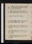Dec. 2. Su.Write 5 pages. John Godwin calls. Dine at Holcroft's, with Fenwick. Stuart au soir, talk of necessity.
3. M.Write 8 pages. Fenwick calls: Masters dines, talk of pain. Call on Nicholson.
4. Tu.Revise. Thucydides, 8 pages.
5. W.Go to Guildhale. Revise. Marriage à la mode, & Duenna, 2 acts.
6. Th.Write 3 pages: revise. Duenna, act 3: Thucydides, 30 pages. Sup at Holcroft's, coercion.
7. F.Fruitless effort. Write 3 pages. Thucydides, 10 pages. Abr. Dyson calls. Sup with miss Godwin.
8. Sa.Revise. Jardine at tea. Sup at Nicholson's, talk of abstraction. Hear from Mrs Inchbald.
Dec. 9. Su.Revise. Dine at Holcroft's: adv. Mercier & Pinard, talk of morale.
10. M.Call on Robinson & Davis, nit. Revise.Holcroft on coercion: call on Nicholson, do. Holcroft at tea.
11. Tu.Revise. Book VIII, 4 pages. Opinion of Vaughan.
12. W. Write 8 pages. Ogilvie, 20 pages: Mably, sur l'Ordre Naturel, 22 pages. Call on Mrs Inchbald. Holcroft at tea.
13. Th.Write 7 pages. Mably, 13 pages. Jardin{e} calls.
14. F.Write 8 pages. Blair calls, talk of revolutions & Helvetius. Mably, 27 pages: Hume on Refinement, 12 pages.
15. Sa. Call on Robinson. Write 1/2 page. Dyson dines. Tea at Jardine's, with Fenwick, Holcroft & Nicholson, talk of punishmt, division of labour & cooperation.
Dec. 16. Su.Write 4 pages. Dine at Holcroft's, with Merget: adv. Belmano & Dyson: Mably, 22 pages.
17. M.Write 4 1/2 pages. Mably, 34 pages. Holcroft at tea: sup at Holcroft's. Write my proposals to Robinson.
18. Tu.Paine's trial. Call on Mrs Inchbald, talk of Erskine, France & promises.
19. W.Write 6 pages. Holcroft & Jardine at tea.
20. Th.Write 10 pages. Holcroft at tea.
21. F.Write 7 pages. School for Scandal, acts 4 & 5. Leroux calls; agreemente.
22. Sa.Write 5 pages. Thucydides, 8 pages. Holcroft at tea.
Dec. 23. Su.Write 3 pages. Dine at H. Tooke's, with Sharpe engraver, & Jardine, talk of ideas & revolutions. Frost, 2 days.
24. M.Call on Robinson. Buy furnituree. Dine at B Hollis's, with Paradise, Birch & Stephens. Call on Nicholson.
25. Tu.Write 3 pages. Dine at Holcroft's. Sup at Nicholson's, revise Book VIII avec lui.
26. W.Go to Somers Towne. Holcroft at tea, Jardine après.
27. Th.Remove. Permit, No. 4, Cavendish Ste.
28. F.Revise un peu. Arrangementse.
Dec. 30. Su.Revise: write 2 1/2 pages. Dine at Holcroft's. Tea Paradise's, with Dornford, Gillies, B. Hollis, miss Bosville's, &c.
Contact --  -- Cookies/Privacy
-- Cookies/Privacy